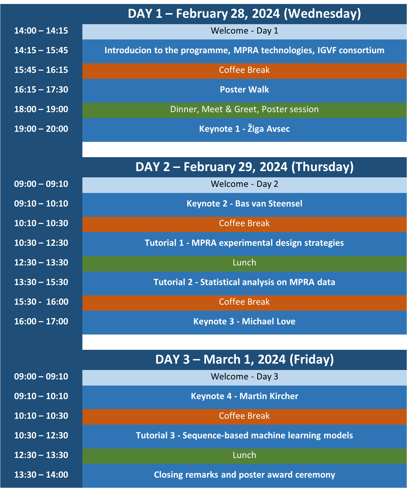
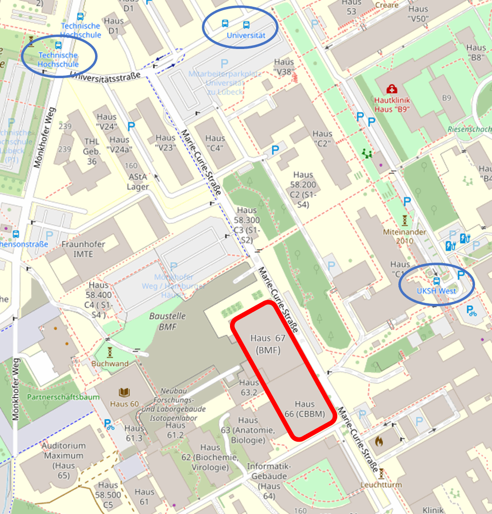

Massively Parallel Reporter Assays: From Sequence Design to Machine Learning Applications
We like to announce a workshop on Massively Parallel Reporter Assays: From Sequence Design to Machine Learning Applications, which will take place at the University of Lübeck from Wednesday, February 28 to Friday, March 1, 2024.
Details
This workshop is part of the IGVF consortium, a network of researchers and institutions working on integrative genomics and functional validation of genetic variants. The aim of the workshop is to provide an overview of the state-of-the-art methods and challenges in the field of massively parallel reporter assays (MPRAs), which are powerful tools for measuring the functional effects of thousands of DNA sequences in parallel.
The workshop will cover topics such as:
- Applications of MPRAs, including machine learning models for regulatory sequence effects
- Sequence selection, experimental controls and optimization of MPRA designs
- Effect quantification, statistical analysis of MPRA data and downstream considerations
- Mike Love, Associate Professor at the University of North Carolina, who will talk about his work on developing MPRA assays and applying statistical methods for high-throughput sequencing data.
- Bas van Steensel, Group Leader at the Netherlands Cancer Institute, who will present his research on using MPRAs to study chromatin structure and other mechanisms of gene regulation.
- Žiga Avsec, Research Scientist at DeepMind, who will discuss his work on using deep learning models for coding and non-coding sequences.
The workshop will also include poster presentations by participants, as well as four hands-on and interactive sessions on relevant practical skills for the design and analysis of MPRAs. We will provide an open environment for discussions and networking. The workshop is intended for researchers and students who are interested in or working on MPRAs or related topics.
By organizing a European workshop for the US-centered IGVF consortium, we wish to provide training for scientists inside and outside the consortium and want to contribute to the IGVF outreach efforts by introducing its mission and resources. We hope to build and foster a European network around the IGVF efforts and to connect different parts of the international research community around MPRAs and the study of regulatory variant effects.
Tentative schedule
We provide a detailed tentative schedule below. The workshop will start at 2pm on Feb 28, 2024 and end on the first day at 8pm. The first day will have the opportunity (i.e. no requirement) to present the participants' (related) work in a poster session (before and over dinner) and will end with a key note. The second day (Feb 29) will start at 9am and end at 5pm. Day 3 (Mar 1) will start at 9am and end before 2pm.

Registration
Registration is closed. The workshop will be held at the University of Lübeck (CBBM Building, Marie-Curie-Straße 66, 23562 Lübeck, Germany) from Wednesday, February 28 to Friday, March 1, 2024. The participation fee for the workshop is 100 Euro, which includes lunch, coffee breaks, and a workshop dinner on the first day. The registration deadline was January 17, 2024. For those who registered, we will reach out to you with more details on how to pay the registration fee by wire transfer.
Useful travel information
City of Lübeck
Lübeck is a city in northern Germany, with around 220,000 inhabitants. It is the second-largest city on the German Baltic coast and the second-largest city in the state of Schleswig-Holstein. L&uum;beck is known as the "Queen of the Hanseatic League", a medieval trade network that dominated the Baltic region Lübeck's historic old town, located on an island, is a UNESCO World Heritage Site and features impressive brick architecture, such as the Holsten Gate, the five Gothic churches, and the Town Hall. Lübeck is also famous for its marzipan, a sweet almond paste that is produced and sold in many shops and cafes.
The city has a rich heritage, for example as the birthplace of Thomas Mann, Willy Brandt, and Günter Grass. Lübeck hosts various events throughout the year, such as the Nordic Film Days, the POPUP Lübeck, and the HanseKulturFestival. You can explore the city and its surroundings by taking a city tour or a boat trip, or by visiting the nearby seaside resort of Travemünde (by regional train). L&uum;beck is a friendly and welcoming city that offers a lot of opportunities for learning, networking, and enjoying. We hope you have a great time at our scientific workshop in Lübeck!
How to get there?
Lübeck is well-connected to other major cities in Germany and Europe by road, rail, air (local regional airport and Hamburg Airport: HAM), and sea (e.g. ferries to Finnland, Latvia, or Sweden).
Lübeck is about 60 km northeast of Hamburg and easily accessible by car through the Autobahn A1. The highway A20 (Baltic Sea highway) connects Lübeck to Rostock. Coming from the north or the south, you reach Lübeck by driving on the A1 highway; change to the A20 highway at the highway junction Lübeck. Follow the A20 highway till the exit Lübeck Genin. Follow the signs to Technische Hochschule, Universität, or UKSH. Access to visitors' car park (paid parking) from "Mönkhofer Weg".
On working days, commuter trains from/to Hamburg go every 30 minutes (on weekends and on holidays every 60 minutes). Additionally, InterCity trains via Hamburg leave/arrive every 2 hours. A few trains continue directly to Berlin, Munich, Cologne or Frankfurt, most connections require a transfer in Hamburg though. Local trains to Lüneburg, Kiel, Schwerin and the beach resorts Travemünde and Timmendorfer Strand depart on an hourly basis. Other regular trains for Copenhagen, Szczecin and the Island of Fehmarn leave every 2 hours. Arriving at Lübeck main station (Hbf), you can continue with a regional train, go to central bus station (ZOB) or take a taxi to the University Campus. At ZOB you can take one of the following buses in the direction of University: Bus 1 - bus stop: Technische Hochschule, Bus 4 - bus stop: Universitätsstraße, Bus 6 - bus stop: Universitätsstraße, Bus 9 - bus stop: UKSH West, bus 32 (express line) - bus stop Stephensonstraße. Arriving at the train station Lübeck St. Jürgen follow Mönkhofer Weg to the South and enter Campus via Universitätsstraße and Marie-Curie-Straße (10-15 minutes or about 1.4 kilometers to the building). Arriving at the train station Hochschulstadtteil walk to the East (Maria-Goeppert-Straße) along Carlebach-Park to reach campus (also about 1.4 kilometers).
Please note that Lübeck (compared to many other German cities) is very bike friendly. There are a lot of bike lanes and usually taking the bike is the fastest way to get around in Lübeck. Please be aware of cyclists in your surrounding, especially on shared lanes.
Where to stay?
While the workshop will be on University campus and close to the UKSH (University Hospital Schleswig-Holstein Campus Lübeck) in the South of the city. You might consider staying near the city center to explore the beautiful historic city outside of the workshop hours. The University of Lübeck does not have guest housing available right now, but since Lübeck is a small city, most hotels are at a convenient distance from the University. The university is reachable by bus, bike or care from the city center. Traveling from the heart of the inner city to the university takes around 20 minutes by bus. If you are looking for a place to stay, you can find a range of accommodation options on the official tourism website of Lübeck. We do not want to endorse any specific housing option, but wanted to let you know that some of the speakers will stay at Motel One at the city center.
Exact workshop location
The workshop will happen in and around room B1/B2 "Levi-Montalcini" on the ground floor of the CBBM Building, Marie-Curie-Straße 66, 23562 Lübeck, Germany. The campus is rather small, so do not worry too much about navigation on campus. We are providing a map below. And here you can find links to OpenStreetMap and GoogleMaps
.
Contact
If you have any questions, please feel free to reach out to the organizers by email (humgen.mpra-workshop-organization (at) lists.uni-luebeck.de).